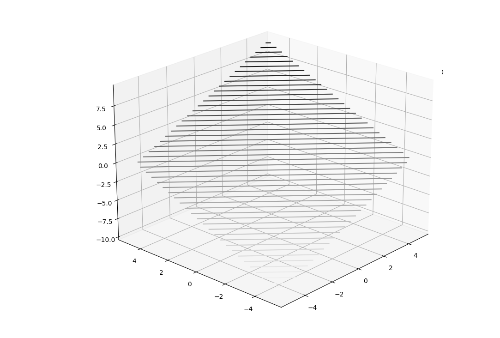
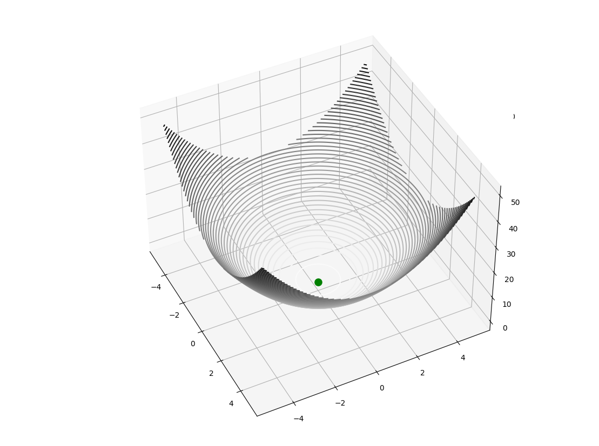
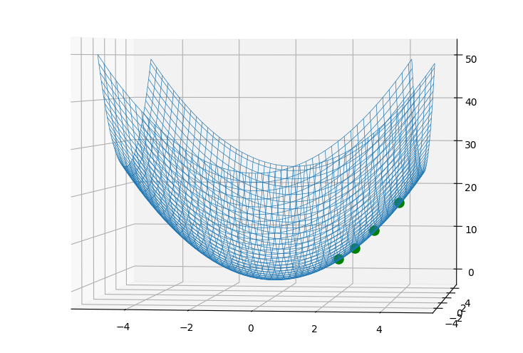
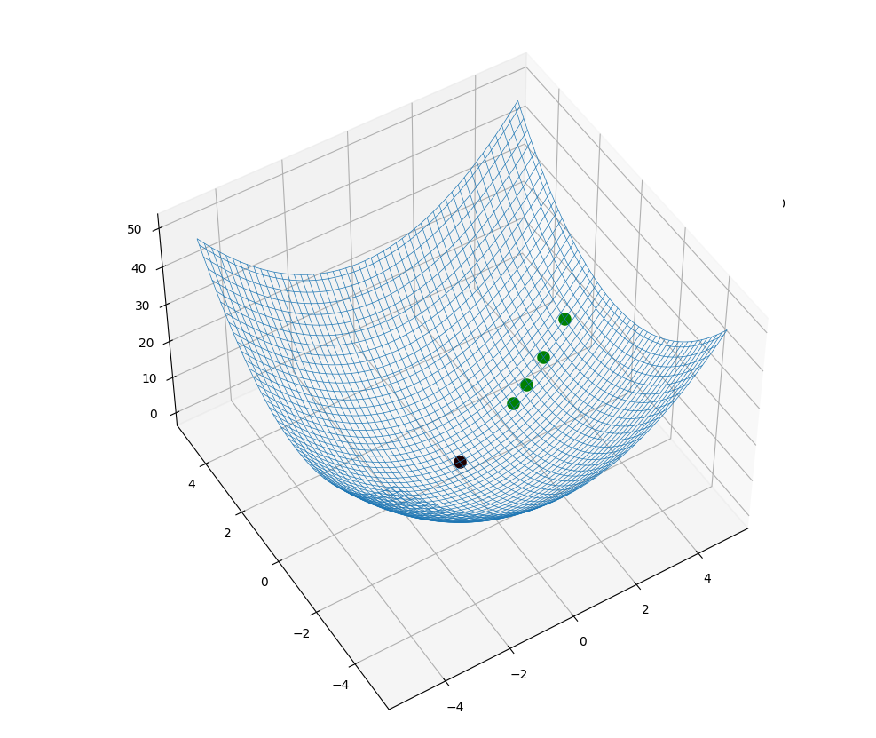

I. Les fonctions de plusieurs variables
Les fonctions sont des objets mathématiques permettant d’associer à une ou plusieurs valeurs d’un ensemble $E$,
une ou plusieurs valeurs d’un ensemble $F$ d’arrivée.
$E$ est appelé domaine de définition.
Nous allons ici nous concentrer sur les fonctions prenant $2$ variables en entrée et associant à ces valeurs
une seule valeur de sortie.
On peut donc définir une fonction à $2$ variables d’entrée et une variable de sortie comme suit :
$$f : E \to F$$
$$(x, y) \to z$$
Une fonction simple à deux variables d’entrée et une de sortie est la fonction somme, qui prend deux valeurs
réelles en entrée et retourne la somme de ceux-ci
$S(x,y) = x+y$ pour tous $x$ et $y$ réels.
On a ainsi $S(3,4) = 3 + 4 = 7$
II. Les lignes de niveau
On s’intéresse maintenant aux valeurs que peuvent prendre les variables d’entrées pour lesquelles on obtient une
certaine valeur de sortie.
A l’image des fonctions à une variable, où l’on est souvent amené à rechercher les racines, c-a-d les
entrées pour lesquelles la sortie est nulle, on s’intéresse pour les fonctions à plusieurs variables aux valeurs
d’entrées qui donnent une valeur égale par la fonction. On appelle l’ensemble des entrées dont la sortie est $Z$
la ligne de niveau $Z$.
Nous allons à partir de maintenant considérer des fonctions à deux variables en entrée pour simplifier les
exemples. La situation serait parfaitement identique avec un nombre de variables plus élevé.
Si l’on reprend la fonction somme $S$, on voit par exemple que $S(2, 5) = 7 = S(3,4)$.
Les couples de valeurs $(2,5)$ et $(3,4)$ appartiennent donc à la ligne de niveau $7$ de la fonction $S$.
On peut résoudre pour l’ensemble des valeurs appartenant à cette ligne de niveau :
$$S(x,y)=7\iff x+y=7\iff y=7-x$$
On peut représenter graphiquement $S$ avec les deux nombres d’entrée représentés par la position d’un point dans
le plan horizontal et le résultat de la fonction est l’ordonnée de ce point :

La ligne de niveau $7$, d’équation $y=7-x$ est dans cette représentation une droite, dont tous les points ont
une ordonnée de $7$.
On voit ici que les lignes de niveau sont des droites de coefficient directeur $-1$.
En poursuivant le raisonnement par la représentation géométrique, on se rend compte que la ligne de niveau $N$
est l’intersection de l’ensemble des points définis par $z = f(x,y)$ et du plan horizontal d’ordonnée $N$, donc
l’ensemble des points $M(x, y, f(x, y))$ avec $f(x, y) = N$.
III. Gradient de fonctions
Pour les fonctions à deux variables, on ne peut plus décrire la «pente» de la courbe avec une seule valeur. La
pente a en effet des composantes sur l’axe $x$ et sur l’axe $y$, que l’on doit discerner. Pour chaque composante, on
peut trouver une valeur de la pente sur cette axe, c’est la dérivée, mais elle est partielle : la valeur sur un
seul axe ne permet pas de décrire les variations de la fonctions.
Pour discerner une dérivée partielle d’une dérivée usuelle, on utilise une notation avec un “d rond” :
la dérivée partielle de $f$ sur l’axe $x$ est donc $\dfrac{\partial f}{\partial x}$. Les dérivées partielles se calculent comme les dérivées
usuelles, en n’oubliant pas que la seule variable qu’on ne considère pas constante est celle décrivant l’axe
qu’on étudie ($x$ ou $y$).
Avec la fonction $f(x)=x^2+y^2$, on a $$\dfrac{\partial f}{\partial x}=2x+0$$car $y^2$ est une constante selon $x$.
De la même manière, $$\dfrac{\partial f}{\partial y}=2y+0$$car $x^2$ est une constante selon $y$.
Pour agencer toutes les informations sur les variations de $f$ en un objet mathématique, on pose le gradient de la
fonction comme étant la matrice contenant les dérivées partielles de $f$ sur chacun des axes :
$$\nabla f=(\dfrac{\partial f}{\partial x},\dfrac{\partial f}{\partial y})$$
IV. Descente de gradient
La descente de gradient consiste en la recherche du minimum local d’une fonction par un rapprochement successif de ce minimum : en partant d’une valeur de départ quelconque, on étudie le gradient de la fonction et en le soustrayant à nos coordonnées initiales, on se rapproche d’un minimum.
On peut imager cet algorithme avec une véhicule se déplaçant sur une courbe : quelque soit sa position initiale, il se dirige dans le sens opposé à la pente ascendante pour atteindre une hauteur minimale.
Dans cette représentation (simplifiée) d’une vallée, on voit au premier coup d’œil que le minimum est en $(0, 0)$. Comment peut-on arriver à cette position mathématiquement ?

Ayant une position $p_n$, on peut calculer on position $p_{n+1}$ ainsi :
$$p_{n+1} = p_n -\varepsilon \times \nabla f(p_n)$$ $\varepsilon$ étant une constante déterminant la vitesse de déplacement sur la courbe.
Le gradient de $f$, $\nabla f$, représente la pente de la fonction $f$ à la position $p_n$ et nous permet de s’assurer de descendre vers un minimum en allant à l’opposé du gradient.
On rappelle que concrètement $\nabla f(p_n)$ est un vecteur dont chacune des coordonnées représente la variation de $f$ pour un petit déplacement selon cette coordonnée autour de la position $p_n$.
Revenons à l’exemple de notre montagne :
La surface de la montagne peut être définie par une fonction.
Soit $f$ la fonction définie par $f(x)=x^2+y^2$ pour tous $x$ et $y$ réels. Elle définit pour tout point du plan l’altitude de la surface de la montagne à cet endroit.
Dans le cas de cette fonction, il paraît évident que le minimum est en $x=y=0$ car $x^2$ et $y^2$ sont positifs, donc au minimum nuls. Procédons tout de même à la méthode de gradient :
On détermine tout d’abord $\nabla f$ :
On a $\dfrac{\partial f}{\partial x}=2x$ et $\dfrac{\partial f}{\partial y}=2y$
Ainsi pour une position initiale $p_0=(4,1)$ et $\varepsilon=0,1$
$$x_{p_1}=x_{p_0}-\varepsilon x_{\nabla f}=4-2\times4\times0.1=3.2$$
$$y_{p_1}=y_{p_0}-\varepsilon y_{\nabla f}=1-2\times1\times0,1=0,8$$
En répétant le processus, on obtient les coordonnées suivantes :
$$p_2 = ( 3,2-2\times3,20\times0,1 = 2,56 ; 0,8 – 2\times0,8\times0,1 = 0,64)$$
$$p_3 = ( 2,56 – 2\times2,56\times0,1 = 2,048 ;0,64 - 2\times0,64\times0,1 =0,512)$$
Et $p_4$ ? Essayez de la calculer
Voyons ce que ça donne dans une représentation géométrique :


Graphiquement, on voit bien que l’on se rapproche progressivement du minimum en $(0, 0)$ (minimum en noir et $p_0,p_1,p_2$ et $p_3$ en vert)
Pour aller plus loin
La descente de gradient permet de trouver le minimum de fonctions par le calcul et est donc très utile notamment dans les domaines de l’intelligence artificielle, où la descente de gradient permet de minimiser l’erreur de modèles prédictifs.
Axel Choné, élève au Lycée Franco-Allemand de Buc
{% endblock %}